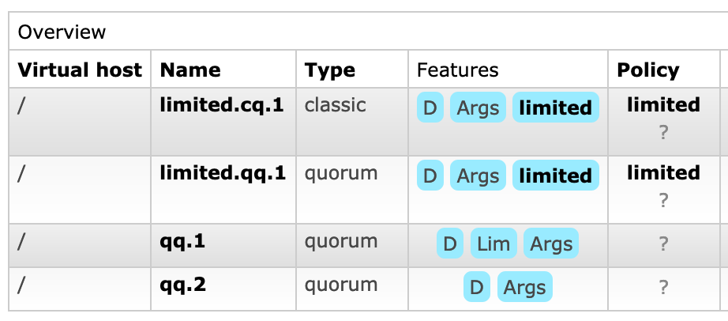
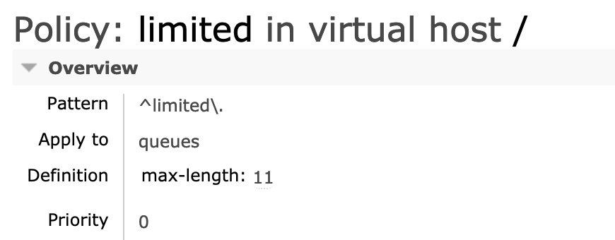

Queue Length Limit
Overview
The maximum length of a queue can be limited to a set number of messages, or a set number of bytes (the total of all message body lengths, ignoring message properties and any overheads), or both.
For any given queue, the maximum length (of either type) can be defined using a policy (this option is highly recommended) or by clients using the queue's optional arguments. In the case where both the effective queue policy and arguments specify a maximum length, the minimum of the two values will be used.
Queue length settings also can be enforced by operator policies.
In all cases the number of messages in the ready state is used; messages unacknowledged by consumers do not count towards the limit.
The number of ready messages and their footprint in bytes can be observed using the messages_ready and message_bytes_ready from rabbitmqctl list_queues output, as well as similarly named fields in the management UI and HTTP API responses.
Default Max Queue Length Limit Behaviour
The default behaviour for RabbitMQ when a maximum queue length or size is set and the maximum is reached is to drop or dead-letter messages from the front of the queue (i.e. the oldest messages in the queue). To modify this behaviour, use the overflow setting described below.
Queue Overflow Behaviour
Use the overflow setting to configure queue overflow behaviour. If overflow is set to reject-publish or reject-publish-dlx, the most recently published messages will be discarded. In addition, if publisher confirms are enabled, the publisher will be informed of the reject via a basic.nack message. If a message is routed to multiple queues and rejected by at least one of them, the channel will inform the publisher via basic.nack. The message will still be published to all other queues which can enqueue it. The difference between reject-publish and reject-publish-dlx is that reject-publish-dlx also dead-letters rejected messages.
Define Max Queue Length Using a Policy
To specify a maximum length using policy, add the key max-length and / or max-length-bytes to a policy definition. For example:
| rabbitmqctl |
rabbitmqctl set_policy my-pol "^one-meg$" \
'{"max-length-bytes":1048576}' \
--apply-to queues
|
|---|---|
| rabbitmqctl on Windows |
rabbitmqctl.bat set_policy my-pol "^one-meg$" ^
"{""max-length-bytes"":1048576}" ^
--apply-to queues
|
The my-pol policy ensures that the one-meg queue contains no more than 1MiB of message data. When the 1MiB limit is reached, the oldest messages are discarded from the head of the queue.
To define an overflow behaviour - whether to drop messages from head or to reject new publishes, add the key overflow to a policy definition. For example:
| rabbitmqctl |
rabbitmqctl set_policy my-pol "^two-messages$" \
'{"max-length":2,"overflow":"reject-publish"}' \
--apply-to queues
|
|---|---|
| rabbitmqctl on Windows |
rabbitmqctl.bat set_policy my-pol "^two-messages$" ^
"{""max-length"":2,""overflow"":""reject-publish""}" ^
--apply-to queues
|
The my-pol policy ensures that the two-messages queue contains no more than 2 messages and all additional publishes are sent basic.nack responses as long as the queue contains 2 messages and publisher confirms are enabled.
Policies can also be defined using the management plugin, see the policy documentation for more details.
Define Max Queue Length Using x-arguments During Declaration
Maximum number of messages can be set by supplying the x-max-length queue declaration argument with a non-negative integer value.
Maximum length in bytes can be set by supplying the x-max-length-bytes queue declaration argument with a non-negative integer value.
If both arguments are set then both will apply; whichever limit is hit first will be enforced.
Overflow behaviour can be set by supplying the x-overflow queue declaration argument with a string value. Possible values are drop-head (default), reject-publish or reject-publish-dlx.
This example in Java declares a queue with a maximum length of 10 messages:
Map<String, Object> args = new HashMap<String, Object>();
args.put("x-max-length", 10);
channel.queueDeclare("myqueue", false, false, false, args);
Inspecting Queue Length Limits
To inspect effective limits for a queue, inspect its optional arguments and effective policy.
This can be done using CLI tools or the management UI.
Using CLI Tools
rabbitmqctl list_queues can be used to display optional queue arguments and the policy applied to a queue, if any:
rabbitmqctl list_queues name durable arguments policy --formatter=pretty_table --silent
# => ┌──────────────┬─────────┬──────────────────────────────────────────────────────────────────────┬─────────┐
# => │ name │ durable │ arguments │ policy │
# => ├──────────────┼─────────┼──────────────────────────────────────────────────────────────────────┼─────────┤
# => │ qq.1 │ true │ {<<"x-queue-type">>,longstr,<<"quorum">>}{<<"x-max-length">>,long,7} │ │
# => ├──────────────┼─────────┼──────────────────────────────────────────────────────────────────────┼─────────┤
# => │ limited.qq.3 │ true │ {<<"x-queue-type">>,longstr,<<"quorum">>} │ limited │
# => ├──────────────┼─────────┼──────────────────────────────────────────────────────────────────────┼─────────┤
# => │ limited.cq.1 │ true │ {<<"x-queue-type">>,longstr,<<"classic">>} │ limited │
# => ├──────────────┼─────────┼──────────────────────────────────────────────────────────────────────┼─────────┤
# => │ qq.2 │ true │ {<<"x-queue-type">>,longstr,<<"quorum">>} │ │
# => └──────────────┴─────────┴──────────────────────────────────────────────────────────────────────┴─────────┘
To find out what arguments are defined by the policy, use rabbitmqctl list_policies:
rabbitmqctl list_policies --formatter=pretty_table --silent
# => ┌───────┬─────────┬────────────┬──────────┬───────────────────┬──────────┐
# => │ vhost │ name │ pattern │ apply-to │ definition │ priority │
# => ├───────┼─────────┼────────────┼──────────┼───────────────────┼──────────┤
# => │ / │ limited │ ^limited\. │ queues │ {"max-length":11} │ 0 │
# => └───────┴─────────┴────────────┴──────────┴───────────────────┴──────────┘
Using Management UI
Both optional queue arguments and effective policy for a queue can be seen on the Queues tab or individual queue page:

The policy name is a clickable link that leads to the policy definition page where you can see the limits:

Getting Help and Providing Feedback
If you have questions about the contents of this guide or any other topic related to RabbitMQ, don't hesitate to ask them on the RabbitMQ mailing list.
Help Us Improve the Docs <3
If you'd like to contribute an improvement to the site, its source is available on GitHub. Simply fork the repository and submit a pull request. Thank you!
Copyright © 2007-2023 VMware, Inc. or its affiliates. All rights reserved.
Terms of Use •
Privacy •
Trademark Guidelines •
Your California Privacy Rights •
Cookie Settings